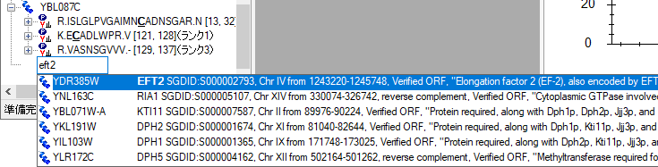
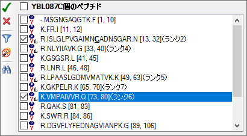
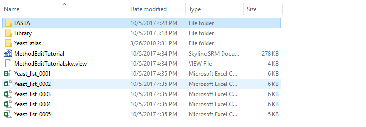

本チュートリアルでは、選択イオンモニタリング（SRM: Selected Ion Monitoring、または多重反応モニタリング（MRM））質量分析計のターゲット分析の新しいターゲットリストおよび装置メソッドを作成するためにSkylineターゲット質量分析環境で利用可能な多数の機能について紹介します。Skylineによる、既存のトランジションリストからのドキュメントの作成方法については、別のチュートリアルをご覧ください。
Skylineの開発にあたっては、ターゲット質量分析研究のためのベンダーに依存しないプラットフォームの構築を目指しました。すべてのSkylineドキュメントから、Agilent、SCIEX、Shimadzu、Thermo-Scientific、Waters製のSRM装置に対応したトランジションリストをエクスポートすることが可能です。ここでは説明しませんが、Skylineでは、これらの装置のネイティブメソッドに加えて、並列反応モニタリング（PRM）のメソッドや単離リストもエクスポートできます。
Skylineドキュメントからメソッドをエクスポートするメリットの一つは、装置の出力データをシームレスにSkylineへインポートしてデータを分析できることです。これについても別のチュートリアルで取り上げます。
Skylineでのターゲットプロテオミクスメソッドの作成方法を理解するために、このチュートリアルをはじめてみましょう。
チュートリアルを始める前に、以下のzipファイルをダウンロードしてください。
https://skyline.ms/tutorials/MethodEdit.zip
この中のファイルを、以下のようなコンピュータ上のフォルダに解凍します。
C:\Users\brendanx\Documents
これにより以下の新しいフォルダが作成されます。
C:\Users\brendanx\Documents\MethodEdit
本チュートリアルを始める前にSkylineを使用していた場合には、Skylineをデフォルト設定に戻すことをお勧めします。デフォルト設定に戻すには、以下の操作を行います。

Skylineのドキュメント設定がデフォルトにリセットされました。
このチュートリアルはプロテオミクスに関するものであるため、以下のようにしてプロテオミクス用インターフェイスを選択できます。

Skylineは、Skylineウィンドウの右上隅のプロテインアイコン  で表示されるプロテオミクスモードで動作しています。
で表示されるプロテオミクスモードで動作しています。
空のドキュメントの編集方法は多数ありますが、まず測定対象とするタンパク質に関する情報をSkylineに入力します。Skylineにタンパク質のバックグラウンド情報を入れることにより、様々なメソッドをより早く作成できるようになります。
このチュートリアルでは、酵母タンパク質を測定するためのメソッドを作成します。まずは、Peptide Atlasのオンラインデータリポジトリからダウンロードした酵母データセットを使ってMS/MSスペクトルライブラリを作成します。Peptide Atlasのどのデータセットにも同じ操作を実施することができますし、Peptide Atlasから入手できるfull SpectraST libraryを使うこともできます。スペクトルライブラリには3つの大きなパブリックソースがあり、これらはすべてSkylineでサポートされています。
他の公開データ、または研究室の実験データのペプチド検索結果を使用して、Skylineで新しいスペクトルライブラリを作成することもできます。Skylineは現在、次の検索結果形式からのライブラリの作成をサポートしています。
このチュートリアルを使い始めるにあたり、以下の手順によってSkylineで最初のBiblioSpecスペクトルライブラリを作成することができます。
新しく作成された「Yeast (Atlas)」ライブラリが [ ペプチド設定 ] の [ ライブラリ ] タブにある [ ライブラリ ] リストに追加されたことを確認します。ライブラリの作成は、作業の邪魔にならないようにバックグラウンドでのタスクとして実行されます。Skylineステータスバーを見ると、ライブラリ作成の進行状況が確認できます。今回は小さいデータセットなので、すぐに作成されます。この文章を読み終える前にすでに完了しているかもしれません。完了すると、Skylineウィンドウの左下隅から完了通知が上方にスライド表示されます。
[ ライブラリ ] タブは次のようになっています。

FASTAシークエンスファイルを使用して、Skylineに実験のバックグラウンドマトリックス情報を設定することもできます。Skylineでは、これをバックグラウンドプロテオームと呼びます。このバックグラウンドプロテオームの内容は任意に設定できます。例えば、特定の生物に対してその生物のcomplete FASTAシークエンスファイルを設定することもできますし、空のマトリックスに18個の特定のタンパク質をいれることもできます。
このチュートリアルでは、[ ペプチド設定 ] で [ OK ] ボタンをクリックする前に次の手順を実行して、酵母のcomplete FASTAファイルを使います。
Skylineはこのファイル内にある5801個のタンパク質シークエンスをスキャンし、ペプチドシークエンス検索のためのインデックスを作成し、このインデックスを作成したファイルに保存します。[バックグラウンドプロテオーム] の画面は次のようになります。

[ ペプチド設定 ] の [ 消化 ] タブに戻りますので、次のような画面を確認します。

Skylineには、ここまでで変更した2つの設定項目を始め、多数の設定項目があります。[ 消化 ] タブの上部にある酵素リストを含めて[ ペプチド設定 ] の各タブには他にもいろいろな設定項目があります。後で確認してみてください。
これによってこれらの変更が有効になり、メインSkylineウィンドウのドキュメントに戻ります。
次に、目的のタンパク質をドキュメントに追加し、新しいスペクトルライブラリがSkylineによるペプチドやトランジションの選択にどのように機能するかを見ていきましょう。
Skylineに目的対象となるタンパク質を追加する一つ目の方法は、フルFASTAシークエンステキストをドキュメントに直接貼り付ける方法です。この方法は、次の手順により実行します。
これにより以下のような画面が表示されます。

これによりスペクトルグラフでこのペプチドのbイオンが紫色でハイライトされます。Skylineがこのペプチドに対してモニタリングするように選択したプリカーサーm/zおよびプロダクトm/zトランジションを表示する手順は以下の通りです。
対応するトランジションを選択すると、グラフ内のイオンがハイライトされ、次のようなグラフが表示されます。

デフォルトでは、2価のプリカーサーに対して測定するトランジションとして最も強度の高い1価のプロダクトyイオン3つのみが選択されていますが、この設定は以下の操作で変更できます。デフォルト設定から変更するには、次の手順を実行します。
[ トランジション設定 ] の画面は次のようになります。

[ トランジション設定 ] の画面は次のようになります。

Skylineドキュメントツリーは次のように更新されます。

VDIIANDQGNRペプチドに、rank 4とrank 5（b5イオンを含む）のイオンが追加されます。また、YAL005Cタンパク質の最初のペプチドとして新しいペプチドが追加されます。そのペプチドを展開すると、新しく追加されたペプチドでは、スペクトルライブラリで一致した3価のスペクトルのみが表示されます。一方で、VDIIANDQGNRペプチドには3価のスペクトルが含まれていません。ライブラリペプチド設定は、スペクトルライブラリが一致するスペクトルを含むプリカーサーのみを選択するようになっています。LIDVDGKPQIQVEFKペプチドを展開すると、2価と3価の両方のスペクトルがスペクトルライブラリに含まれている例が見られます。
新しいスペクトルライブラリにはYAL005Cタンパク質に一致する結果が多数含まれていますが、非常に小さいデータセットから作成されたため、多くのタンパク質では、ペプチドの情報が全く表示されません。しかし、Skylineではスペクトルライブラリの使用が1つに制限されていないので、たとえば、GPMから酵母の公開ライブラリを追加することができます。NISTの酵母ライブラリはそれよりも大きいですが、このチュートリアルではより小さなGPMライブラリを選択しました。このチュートリアルのzipファイルに含まれているGPMライブラリを追加するには、次の手順を実行します。
[ペプチド設定 ] の画面は次のようになります。

Skylineではプロダクトイオン決定の情報としてスペクトルを1つしか選択できないこと、一致する結果をランクする基準を示す [ ペプチドをランク ] 内の値は空白のままであるため、ライブラリはリストでの表示順に検索されます。Skylineでは、最初に見つかったスペクトルの一致結果を使用します。結果を表示するには、以下の操作を行います。
ライブラリが読み込まれると、ドキュメントが更新され、新しいペプチドがたくさん含まれるようになります。GPMライブラリが追加される前にすでにあったペプチドまたはペプチドプリカーサーを選択した場合、スペクトルチャートタイトルのスペクトルは更新前と同様に「Yeast (Atlas)」ライブラリに属していることがわかります。一方、新しく追加されたペプチドとペプチドプリカーサーのスペクトルチャートでは、タイトルに「Yeast (GPM)」と表示されます。
注：他の形式のライブラリとは異なり、GPMライブラリには最も強度の高い20個のMS/MSピークしか保存されません。保存されているスペクトルが、実際に一致するとされるスペクトルにどれだけ一致しているかは自分で判断できますが、それには、他のライブラリ内のフィルタされていないスペクトルに比べてなぜ非常に少ない数のピークしか表示されないのかを良く理解する必要があります。
一部のペプチドには、測定するペプチドプリカーサーがかなり多くなっているものもあります。ドキュメントの最適化をする前に、それらすべてのペプチドプリカーサーを測定したい場合もあります（最適化の手順は別のチュートリアルで取り上げます）。ただし、このチュートリアルでは、各タンパク質に対して測定するペプチド数を制限したい場合を想定しています。
実験データなしでこのタイプのペプチドをランク付けできるような予測アルゴリズムを将来追加する予定ですが、現時点で、自分でペプチドを手動により選択することなくタンパク質あたりのペプチド数を制限できる唯一の方法は、スペクトルライブラリのランクスコアを使用する方法です。あいにく、このチュートリアルで作成されたBiblioSpecライブラリとGPMからの公開ライブラリは両ライブラリ間で比較可能なスコアを有していません。従って、今回のケースでは、ランクスコアを使用するライブラリから1つのライブラリを外す必要があります。
現在のドキュメント内でのタンパク質あたりのペプチド数を制限するには、次の手順を実行します。
ペプチド数がかなり少なくなったはずです。これで空のタンパク質も削除できるようになります。
ここで、作成したバックグラウンドプロテオームファイルに戻り、作業中のペプチドとタンパク質にどうやって情報を追加するかを、このファイルを編集しながら見ていきます。
タンパク質のリストを使って作業しており、FASTAファイルのタンパク質の同定に使用するIDはありますが、シークエンスを1つずつ貼り付けながらFASTAファイル全体を見ていきたくはないとします。バックグラウンドプロテオームは設定したので、Skylineで必要なのは、バックグラウンドプロテオームを作成したときに使用したFASTAファイルのタンパク質IDの行区切りリストだけです。
新しいタンパク質のリストを現在のドキュメントに追加するには、次の手順を実行します。
タンパク質リストが [ タンパク質リスト ] グリッドに追加され、バックグラウンドプロテオーム内で見つかったIDの [ 説明 ] と [ シークエンス ]の情報 が割り当てられます。バックグラウンドプロテオームにはアクセッション番号、推奨名、遺伝子、生物種の情報がないため、これらの列は空になります。タンパク質シークエンスをもっと表示するには、以下の操作を行います。
画面は次のようになります。

これでこれらのタンパク質がドキュメントの最後に追加されます。これらのタンパク質の多くには、GPMライブラリ内のスペクトルに一致するぺプチドがありませんので、以下の手順を実施してからタンパク質を削除します。
ペプチドリストをSkylineドキュメントに挿入する方法は2つあり、結果はそれぞれ以下のようになります。
最初の結果を得るには、次の手順を実行します。
Skylineは「peptides1」という名前のドキュメント内の新しいペプチドリストに全ペプチドを追加します。このリストの名前を変更するには、新しい名前を入力します。
GPMライブラリには追加されたすべてのペプチドのスペクトルがあり、下向き矢印キーを押して貼り付けられたペプチドを選択するとそれぞれの対応するスペクトルが見られます。Skylineドキュメントは次のようになります。
各ペプチドがバックグラウンドプロテオーム内のタンパク質に関連付けられるように同じリストを挿入するには、[ ペプチドリストを挿入 ] を使用する必要があります。ここで以下の手順を実行します。
各ペプチドのタンパク質フィールドが自動入力され、フォームが次のようになります。

ペプチドが以前のように単一のペプチドリストではなく、名前でタンパク質に追加されました。
この時点で、GPM酵母ライブラリにそれぞれのスペクトルがあれば、特に確認を必要とせずにドキュメントに70個のペプチドが追加されています。このドキュメント内において測定するには一致が特に悪いライブラルスペクトルを持つペプチドを表示するには、次の手順を実行します。
下に示すように、このスペクトルには一致するyイオンが1つとbイオンが1つしか表示されません。
これら2つのイオンを測定しても、このペプチドについての有用な情報は得られないと思われます。
ライブラリスペクトルが目的の5つのプロダクトイオンを提供できなかったすべてのペプチドを削除するには、次の手順を実行します。
Skylineウィンドウの右下角にあるステータスバーインジケーターの、ペプチド数が70から64に減ったことがわかります。

もう一つチェックすることが望ましいのは、選択したペプチドが測定しようとしているタンパク質に対してどれだけユニークであるかということです。あいにく、FASTAシークエンスファイルは重複を含んでいるため、バックグラウンドプロテオーム内の単一のシークエンスに特異的でないすべてのペプチドを削除するのは賢明ではありません。1つの遺伝子から翻訳される複数のホモログなタンパク質に属するペプチドが多く存在します。
Skylineでは、ドキュメント内の各タンパク質のペプチドの特異性を検査するフォームが用意されています。編集しているドキュメントの最後の2つのタンパク質を検査するには、次の手順を実行します。
以下の情報と共に、[ ユニークペプチド ] フォームが開きます。

これら6つのタンパク質を詳細に確認すると、一部のシークエンスは類似していますが、十分にばらつきがありますので、この1つのペプチドだけでは対象のタンパク質を十分な信頼性をもって測定できません。グリッド表示の列を選択すると、各タンパク質のシークエンスを表示できます。
このタンパク質で選択された1つのペプチドは複数（この場合は4つ）のタンパク質にマップされています。今回は4つのタンパク質の類似度が高いことがわかりますので、これは保持すると良いでしょう。
注：このチュートリアルの最初から、[ ペプチド設定 ] – [ 消化 ] タブの [ バックグラウンドプロテオーム ] 欄の下にはペプチドの一意性を強制する設定が追加されています。これは [ 次を使用してペプチドの一意性を強制します ] と表示されています。これがこのドキュメント内で選択されたペプチドにどう影響するか試してみるといいでしょう。
Deleteキーを使うとドキュメントから項目を削除でき、既存の名前に新しい名前を上書き入力するとペプチドリストの名前を変更できることはすでに見てきました。このセクションでは、測定するタンパク質、ペプチド、プリカーサー、トランジションを素早く編集できる、より直接的なドキュメント編集機能を紹介します。
バックグラウンドプロテオームが定義されていれば、ドキュメントの最後の空白項目に入力するだけでタンパク質やペプチドの追加が補助されます。タンパク質の名前を入力して追加する場合は、次の手順を実行します。
Skylineは、タンパク質の追加が下記のように補助されます。

Skylineではまた、FASTAファイルのタンパク質シークエンスの説明テキストも検索します。説明に基づいてタンパク質を検索し、追加するには、次の手順を実行します。

3つ目のオートコンプリーションオプションでは、ペプチドシークエンスの入力を開始すると、Skylineがそれを含むペプチドやタンパク質（複数可）を識別しようとします。そのシークエンスでペプチドを検索して追加するには、次の手順を実行します。
ペプチドがドキュメントに追加されますが、それは最後のブランク要素のすぐ上にある既存のタンパク質YDR385Wに追加されます。追加されたタンパク質は次のようになります。
タンパク質をドキュメントに追加したら、Skylineのポップアップ選択リストを使って対象とするペプチド、プリカーサー、プロダクトイオンの編集もできます。次の手順によって、YBL087Cタンパク質に別のペプチドを追加できます。
事前にフィルタされたポップアップ選択リストが開き、すでにドキュメントに追加されているペプチドセットのみが表示されます。ここでチェックマークをオフにすると、Deleteキーを使ってタンパク質からペプチドを削除したのと同じ操作となります。また、次の手順で新しいペプチドを追加することもできます。
これによって、選択リストは次のようになります。

サブリストをサポートするドキュメント内の全項目で、同様の選択リストが表示されます。ペプチドプリカーサーのプロダクトイオントランジションを変更するには、次の手順を実行します。
何らかの理由でこの特定のプリカーサーはbイオンだけで測定した方が良いと想定し、実際に現在の2つのyイオンを2価のbイオンで置き換えたいとします。これには、次の手順を実行します。
選択リストは次のようになります。

ドキュメント内の情報をより広い視野から確認する方がいいこともあります。ドキュメント上でマウスを動かしたときに気づかれたかもしれませんが、気づかれていない方のために、この機能を説明します。マウスカーソルをドキュメントツリー内の要素上にポイントすると、下図で示すようなデータヒントが表示されます。これらのヒントでは、選択した要素が赤で強調表示され、ドキュメント内に含まれる要素は青で、またフィルタに一致するがドキュメントに含まれていない要素は太字で表示されます。


最後に、ドラッグアンドドロップを使ってドキュメント内の要素を並べ替えることもできます。このチュートリアルで作成したドキュメント内では、タンパク質しか並べ替えられません。その他の要素には固有の表示順があり、移動できません。ただし、上記のようにリストを直接ドキュメントに貼り付けてタンパク質情報のないペプチドリストを作成する場合には、ドラッグアンドドロップでリスト内のペプチドを並べ替えることができます。
ドキュメント編集の最終的な目的は、ドキュメント内のペプチドを質量分析装置で測定することです。そのためには、まず、どの質量分析装置を使うかを決定する必要があります。Skylineでは、Agilent、SCIEX、Shimadzu、Thermo Scientific、Watersの5社の三連四重極装置のトランジションリストをエクスポートできます。また、これらすべてに対してネイティブメソッドファイルをエクスポートすることもできます。ネイティブメソッドファイルをエクスポートには、すべての装置でメソッドテンプレートが必要であり、一部の装置でソフトウェアが必要です。
このチュートリアルでは、SCIEX Q Trapのトランジションリストを1つエクスポートします。その前に、一部の設定を変更する必要があります。Q Trapトランジションリストをエクスポートするには、次の手順でドキュメントを準備します。
トランジションリストをエクスポートする前に、まず次の手順でドキュメントをMethodEditフォルダに保存します。
次に、このチュートリアルで作成したドキュメントには355個のトランジションが含まれていることに注意してください。すでに、使用予定のカラムでこれらのペプチドの溶出時間の正確な測定値がある場合は、それらをすべて1つのスケジュールメソッドでエクスポートすると、それぞれのトランジションを短い測定時間枠で測定することができます。ここでは溶出時間の測定値はまだないので、まずは1回の測定でグラジエント全体を測定可能なグループに分割し、各グループ毎にグラジエント全体にわたって測定する必要があります。使用する適切な値は、装置の速度および感度によって異なります。最新の三連四重極装置ではこの値は何百にもなることがありますが、このチュートリアルは75が適切であると考えられているSCIEX 4000 Q Trapを対象に記述されています。
この情報があれば、SCIEX 4000 Q Trapのトランジションリストをエクスポートできます。これには、次の手順を実行します。
これによって、[ トランジションリストをエクスポート ] の画面は次のようになります。

Windowsエクスプローラーウィンドウに切り替えて、MethodEditフォルダに移動し、作成したトランジションリストファイルを見てみましょう。MethodEditフォルダの内容は次のようになります。

5つの新しいファイルのうちの最初のファイルを開いてください。下に示すようなトランジションリストが表示されます。

プリカーカーサーm/z、プロダクトm/z、ドウェル時間、拡張ペプチド情報、デクラスタリングポテンシャル、コリジョンエネルギーの順です。この情報をAnalystソフトウェアメソッド作成ユーザーインターフェイスに貼り付けることで、酵母サンプルを用いたペプチドの測定に使用できるメソッドが作成できます。
ターゲットプロテオミクスの実験にSkylineアプリケーションを使用するにあたっては、学ばなければならないことがまだまだ沢山ありますが、今回のチュートリアルを通じて、これで十分に自信を持って自分で実際にSkylineドキュメントを作成し始められるはずです。今回のチュートリアルによって、新しい仮定の検証のためのペプチド測定メソッドを今までより短時間で作成できるようになればと願っています。また、装置の出力ファイルをSkylineにインポートすると、ピークの同定と結果の解析ができます。Skylineドキュメントを作成することで、装置出力の理解がずっと簡単になるはずです。なお、これらの次のステップの実行方法については、Skylineウェブサイトにある別の測定資料で取り上げています。